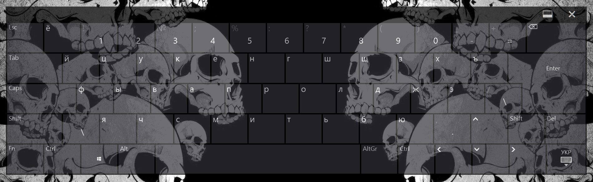

Вся площадь экрана в качестве тачпада при помощи программы Touch Mouse Pointer
Не всегда бывает удобно управлять курсором мыши прямыми касаниями в нужном месте. Бывают программы, интерфейс которых заточен под точную манипуляцию курсором (маленькие кнопки, необходимость наводить курсор на какой либо элемент), к примеру Blender или GIMP. Ну и не будем забывать игры. Да, безусловно для этих целей у нас есть Comfort Keys и GestureWorks Gameplay, но они не всегда могут запуститься сверху над играми, особенно это касается GestureWorks Gameplay. Touch Mouse Pointer работает практически всегда и везде. К тому же, в некоторых случаях Touch Mouse Pointer будет отличным компаньоном для Comfort Keys. К примеру, они отлично дополняют друг друга в игре Diablo II, поверх которой я не смог запустить GestureWorks Gameplay. При помощи Touch Mouse Pointer вполне удобно взаимодействовать с этой игрой за счёт умного ускорения и замедления курсора мыши в зависимости от скорости движения вашего пальца, чего к сожалению нет в GestureWorks Gameplay. Ну а Comfort Keys дополняет Touch Mouse Pointer горячими клавишами.
У программы есть три режима работы: полноэкранный, плавающий и фиксированный. В полноэкранном режиме вся площадь выполняет роль тачпада, как на ноутбуке. В плавающем режиме виртуальный тачпад сопоставим по размерам с настоящим физическим тачпадом и его можно перетаскивать по экрану в любое удобное для вас место. Ну и наконец в фиксированном режиме тачпад пристыковывается к правой стороне экрана по всей его высоте. Прежде всего нас интересует полноэкранный режим, так как он самый удобный и практичный в использовании, однако вы можете использовать и другие режимы, если они покажутся вам интересными.
У программы есть множество разных настроек. Можно настроить и чувствительность мыши, и отключить её ускорение, если вам оно не понравится (но это вряд ли), и указать нужные действия кнопок мыши на определённые касания по экрану. Рекомендую зайти во вкладку Full screen, нажать на кнопку Layout и выбрать из списка, возле Layout of full screen, пункт Default (with L/R and wheel area). Таким образом у вас виртуально разделится экран по высоте и если нажимать в левой части экрана на верхнюю половину, то будет срабатывать левый клик мыши, а по нижней половине - правый. Плюс к этому, узкая часть экрана к правой его стороне, тоже по всей высоте, будет выполнять роль колёсика мыши. Возможно не очень понятно объяснил, но просто попрактикуйтесь и вы поймёте.
Напоследок осталось сказать, что у данной программы есть ещё одна очень приятная функция, которая не связана с мышью. В настройках, во вкладке Keyboard, можно включить прозрачность родной клавиатуры. Это крайне полезная функция, так как на мой взгляд без прозрачности работать с этой клавиатурой невозможно. Особенно если вы набираете какой-то документ или пишете код в Visual Studio Code или Sublime Text. Однако, есть одна неприятная особенность. Данная функция будет работать только на Windows 8.1 или Windows 10 ранних сборок, точную цифру сказать не могу, но вроде на версии 1909 ещё работала. В поздних сборках Microsoft решили убрать такой скрытый функционал у клавиатуры и очень зря... Так же стоит отметить, что на одной из сборок Windows 10, перед тем как они убрали данный функционал, прозрачность клавиатуры через Touch Mouse Pointer работала не стабильно. Клавиатура прям в момент своей работы, спустя минуту после своего вызова, могла снова у вас на глазах стать непрозрачной и помогала лишь перезагрузка планшета. А иногда она никак не хотела становиться прозрачной после запуска Windows и приходилось опять таки перезагружать планшет. Досадная ситуация, однако если у вас Windows 8.1, то всё будет работать как часы.
